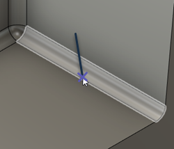

<div id="view_orientation_surfaceNormal"><p>サーフェス上の任意の場所をクリックして、工具方向をサーフェス上のその点に対して垂直に設定します。</p>
<table class="tipTable" cellspacing="10">
<tr>
<td><center></center></td>
<td><center></center></td>
</tr><tr>
<td><center><p><b>綿の選択</b></p></center></td>
<td><center><p><b>選択対象に対して垂直な工具方向</b></p></center></td>
</tr></table>
</div>